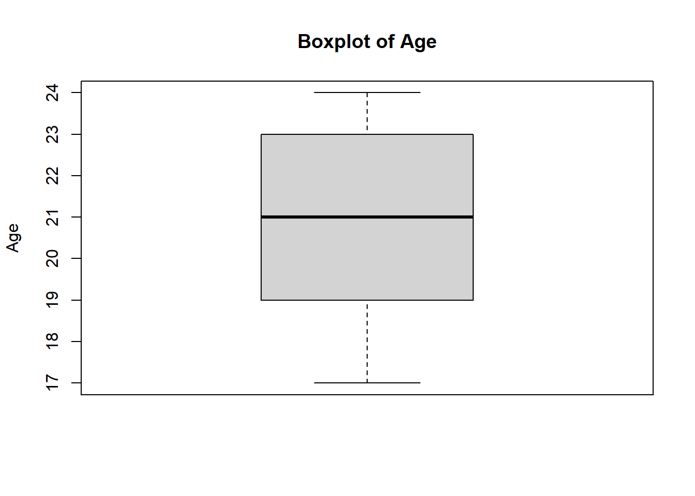

library(tidyverse)
library(readxl)
library(janitor)
library(skimr)
library(stringr)
library(writexl)Module 2. Làm sạch và Chuẩn bị Dữ liệu cho Nghiên cứu
Tổng quan Module
TipLearning Outcomes
Sau khi hoàn thành Module 2, học viên có thể:
- Kiểm tra chất lượng dữ liệu nghiên cứu
- Phát hiện và xử lý dữ liệu thiếu
- Phát hiện dữ liệu trùng lặp
- Chuẩn hóa biến phân loại
- Kiểm tra và xác thực thang đo Likert
- Phát hiện ngoại lệ cơ bản
- Tạo Data Quality Report
- Xuất bộ dữ liệu sạch cho các bước phân tích tiếp theo
NoteModule Logic
Module này trả lời câu hỏi:
Làm thế nào để chuyển một bộ dữ liệu khảo sát còn nhiều lỗi thành một bộ dữ liệu sẵn sàng cho phân tích?
Workflow:
Nhập dữ liệu
↓
Kiểm tra
↓
Dữ liệu thiếu
↓
Dữ liệu trùng lặp
↓
Danh mục
↓
Kiểm định số liệu
↓
Lọc dữ liệu ngoại lai
↓
Báo cáo chất lượng
↓
Xuất dữ liệu sạch2.1 Why Data Cleaning Matters?
NoteKnowledge Notes
What?
Data cleaning là quá trình phát hiện, đánh giá và xử lý các lỗi dữ liệu trước khi phân tích.
Why?
Dữ liệu sai sẽ tạo ra kết quả sai.
When?
Luôn thực hiện trước mọi phân tích thống kê.
How do we use it in research?
Data cleaning là bước bắt buộc trong tất cả các nghiên cứu. Đây là bước đầu tiên và quan trọng nhất cần được thực hiện trước khi phân tích số liệu
ImportantResearch Application
Trong nghiên cứu thực tế, các lỗi thường gặp:
Age = 999
Gender = male / Male / MALE
PE1 = 99
Duplicate IDs
Missing valuesNếu không xử lý, kết quả phân tích có thể bị sai lệch nghiêm trọng.
WarningCommon Mistakes
Người học thường mắc lỗi:
- Chạy các phân tích trước khi kiểm tra dữ liệu
- Không kiểm tra dữ liệu thiếu (missing values)
- Không phát hiện duplicate IDs
- Không kiểm tra chất lượng số liệu
- Chỉ nhìn output mà không đánh giá chất lượng dữ liệu
2.2 Research Workflow
NoteKnowledge Notes
What?
Research data workflow là quy trình xử lý dữ liệu từ dữ liệu thô đến dữ liệu sẵn sàng phân tích.
Why?
Một workflow rõ ràng giúp đảm bảo tính tái lập và giảm lỗi.
How?
Quy trình chuẩn:
Dữ liệu thô
↓
Nhập khẩu
↓
Kiểm tra
↓
Làm sạch dữ liệu
↓
Xác thực
↓
Xuất dữ liệu sạch
↓
Phân tích thống kê
TipKey Points
Phân tích tốt bắt đầu từ dữ liệu tốt.
Data cleaning thường chiếm phần lớn thời gian của một dự án phân tích dữ liệu.
2.3 Import Raw Dataset
NoteKnowledge Notes
What?
Trong module này, dữ liệu thô được lưu trong sheet 02_Dirty_Data.
When?
Dùng sheet này để thực hành phát hiện và sửa lỗi dữ liệu.
How?
Ta dùng read_excel() để nhập dữ liệu và clean_names() để chuẩn hóa tên biến.
Load Packages
Import Data
dirty_data <- read_excel(
"data/FPT_PolySchool_R_Training_Demo_Dataset.xlsx",
sheet = "02_Dirty_Data"
) |>
clean_names()First Look
glimpse(dirty_data)Rows: 300
Columns: 41
$ id <chr> "ST001", "ST002", "ST003", "ST004", "ST005", "ST006", "…
$ gender <chr> "Female", "Male", "Female", "Male", "M", "Female", "Fem…
$ age <dbl> 24, 20, 22, 21, 24, 18, 24, 19, 17, 20, 24, 23, 24, 22,…
$ major <chr> "Graphic Design", "Digital Marketing", "Digital Marketi…
$ year_study <dbl> 3, 2, 1, 3, 2, 1, 2, 3, 3, 1, 3, 2, 2, 2, 2, 1, 1, 3, 1…
$ campus <chr> "Da Nang", "Da Nang", "Ho Chi Minh", "Da Nang", "Can Th…
$ gpa <dbl> 7.87, 5.76, 7.60, 6.17, 8.83, 7.35, 6.60, 7.83, 7.50, 6…
$ internet_hours <dbl> 7.2, 3.9, 6.3, 8.3, 3.5, 6.1, 6.9, 7.1, 3.2, 5.2, 6.0, …
$ smartphone_use <dbl> 5, 3, 1, 1, 1, 1, 1, 1, 3, 3, 4, 4, 2, 4, 3, 2, 3, 4, 1…
$ lms_use <dbl> 4, 3, 2, 3, 5, 2, 3, 2, 3, 1, 2, 1, 2, 1, 4, 5, 4, 4, 5…
$ ai_experience <dbl> 0, 2, 3, 1, 2, 1, 3, 3, 0, 2, 4, 2, 4, 3, 2, 4, 2, 1, 1…
$ pe1 <dbl> 3, 3, 4, 4, 4, 3, 4, 3, 4, 3, 4, 5, 4, 4, 4, 4, 4, 3, 2…
$ pe2 <dbl> 4, 2, 4, 3, 4, 3, 4, 4, 5, 2, 4, 2, 3, 3, 2, 4, 4, 2, 2…
$ pe3 <dbl> 3, 1, 4, 3, 4, 2, 4, 5, 4, 3, 3, 2, 2, 4, 3, 4, 5, 4, 3…
$ pe4 <dbl> 2, 3, 3, 3, 3, 2, 3, 3, 5, 4, 4, 5, 3, 4, 4, 3, 5, 4, 4…
$ ee1 <chr> "3", "4", "2", "4", "5", "4", "3", "4", "4", "4", "3", …
$ ee2 <dbl> 4, 3, 3, 3, 3, 3, 4, 5, 3, 3, 4, 4, 3, 5, 3, 3, 4, 2, 2…
$ ee3 <dbl> 4, 4, 3, 3, 4, 4, 4, 5, 4, 4, 4, 4, 4, 5, 5, 4, 3, 4, 4…
$ ee4 <chr> "2", "3", "3", "4", "2", "4", "4", "3", "3", "5", "3", …
$ si1 <dbl> 3, 3, 4, 2, 2, 2, 2, 5, 5, 3, 1, 3, 2, 4, 2, 1, 2, 4, 3…
$ si2 <dbl> 4, 1, 5, 1, 1, 3, 4, 3, 4, 3, 1, 3, 3, 2, 2, 2, 2, 4, 3…
$ si3 <dbl> 3, 1, 4, 2, 3, 2, 1, 3, 5, 3, 2, 4, 2, 3, 4, 3, 3, 2, 2…
$ si4 <dbl> 3, 4, 4, 3, 2, 2, 4, 4, 5, 2, 1, 2, 3, 3, 3, 2, 3, 3, 2…
$ fc1 <dbl> 3, 2, 3, 4, 1, 4, 4, 2, 2, 1, 3, 3, 4, 4, 4, 4, 3, 4, 4…
$ fc2 <chr> "4", "3", "3", "2", "2", "4", "4", "2", "4", "3", "2", …
$ fc3 <dbl> 4, 2, 3, 4, 3, NA, 5, 2, 3, 1, 2, 3, 2, 2, 4, 3, 4, 4, …
$ fc4 <dbl> 4, 2, 3, 3, 4, 4, 5, 2, 3, 1, 2, 4, 2, 3, 3, 5, 2, 4, 4…
$ dr1 <dbl> 3, 5, 4, 4, 4, 1, 3, 5, 4, 4, 4, 5, 4, 2, 5, 3, 4, 4, 4…
$ dr2 <dbl> 4, 5, 3, 2, NA, 2, 4, 4, 4, 2, 4, 4, 3, 2, 5, 3, 2, 3, …
$ dr3 <dbl> 4, 3, 4, 3, 4, 5, 2, 4, 2, 2, 5, 4, 5, 3, 4, 5, 4, 4, 4…
$ dr4 <dbl> 2, 4, 3, 2, 4, 3, 3, 4, 4, 2, 5, 3, 4, 3, 3, 3, 3, 4, 2…
$ tr1 <chr> "3", "5", "5", "4", "4", "4", "4", "4", "4", "2", "5", …
$ tr2 <dbl> 3, 3, 5, 4, 5, 5, 4, 5, 4, 3, 5, 4, 5, 3, 3, 5, 2, 5, 4…
$ tr3 <dbl> 4, 4, 4, 3, 3, 3, 5, 4, 3, 5, 5, 5, 3, 4, 4, 4, 4, 4, 3…
$ tr4 <dbl> 3, 5, 3, 4, 4, 3, 5, 4, 4, 3, 5, 4, 4, 4, 4, 4, 4, 5, 4…
$ bi1 <dbl> 4, 5, 4, 5, 4, 4, 5, 5, 5, 3, 5, 5, 4, 5, 4, 4, 5, 3, 5…
$ bi2 <dbl> 5, 5, 4, 3, 5, 5, 4, 4, 5, 3, 5, 5, 5, 4, 5, 5, 4, 5, 4…
$ bi3 <dbl> 5, 4, 5, 4, 5, 5, 4, 5, 5, 4, 5, 5, 5, 5, 5, 5, 5, 5, 5…
$ au1 <dbl> 3, 4, 3, 3, 4, 1, 3, 3, 5, 3, 3, 5, 5, 5, 4, 3, 5, 5, 5…
$ au2 <dbl> 4, 4, 3, 3, 4, 3, 4, 4, 4, 2, 3, 3, 3, 4, 5, 3, 4, 4, 5…
$ au3 <dbl> 3, 5, 4, 2, 3, 5, 4, 3, 5, 2, 3, 4, 5, 4, 3, 3, 4, 5, 5…head(dirty_data)
ImportantResearch Application
Trong nghiên cứu thực tế, nên lưu toàn bộ bước import trong script để đảm bảo tính tái lập.
2.4 Initial Data Audit
NoteKnowledge Notes
What?
Data audit là bước đánh giá sơ bộ chất lượng dữ liệu.
Why?
Giúp phát hiện lỗi trước khi làm sạch.
How?
Kiểm tra:
- Kích thước bộ dữ liệu (Dataset Dimensions)
- Tên biến (Variable Names)
- Kiểu dữ liệu biến (Data Structure)
- Thống kê tóm tắt (Summary Statistics)
- Giá trị thiếu (Missing value)
Dataset Dimensions
dim(dirty_data)[1] 300 41Variable Names
names(dirty_data) [1] "id" "gender" "age" "major"
[5] "year_study" "campus" "gpa" "internet_hours"
[9] "smartphone_use" "lms_use" "ai_experience" "pe1"
[13] "pe2" "pe3" "pe4" "ee1"
[17] "ee2" "ee3" "ee4" "si1"
[21] "si2" "si3" "si4" "fc1"
[25] "fc2" "fc3" "fc4" "dr1"
[29] "dr2" "dr3" "dr4" "tr1"
[33] "tr2" "tr3" "tr4" "bi1"
[37] "bi2" "bi3" "au1" "au2"
[41] "au3" Data Structure
str(dirty_data)tibble [300 × 41] (S3: tbl_df/tbl/data.frame)
$ id : chr [1:300] "ST001" "ST002" "ST003" "ST004" ...
$ gender : chr [1:300] "Female" "Male" "Female" "Male" ...
$ age : num [1:300] 24 20 22 21 24 18 24 19 17 20 ...
$ major : chr [1:300] "Graphic Design" "Digital Marketing" "Digital Marketing" "Graphic Design" ...
$ year_study : num [1:300] 3 2 1 3 2 1 2 3 3 1 ...
$ campus : chr [1:300] "Da Nang" "Da Nang" "Ho Chi Minh" "Da Nang" ...
$ gpa : num [1:300] 7.87 5.76 7.6 6.17 8.83 7.35 6.6 7.83 7.5 6.17 ...
$ internet_hours: num [1:300] 7.2 3.9 6.3 8.3 3.5 6.1 6.9 7.1 3.2 5.2 ...
$ smartphone_use: num [1:300] 5 3 1 1 1 1 1 1 3 3 ...
$ lms_use : num [1:300] 4 3 2 3 5 2 3 2 3 1 ...
$ ai_experience : num [1:300] 0 2 3 1 2 1 3 3 0 2 ...
$ pe1 : num [1:300] 3 3 4 4 4 3 4 3 4 3 ...
$ pe2 : num [1:300] 4 2 4 3 4 3 4 4 5 2 ...
$ pe3 : num [1:300] 3 1 4 3 4 2 4 5 4 3 ...
$ pe4 : num [1:300] 2 3 3 3 3 2 3 3 5 4 ...
$ ee1 : chr [1:300] "3" "4" "2" "4" ...
$ ee2 : num [1:300] 4 3 3 3 3 3 4 5 3 3 ...
$ ee3 : num [1:300] 4 4 3 3 4 4 4 5 4 4 ...
$ ee4 : chr [1:300] "2" "3" "3" "4" ...
$ si1 : num [1:300] 3 3 4 2 2 2 2 5 5 3 ...
$ si2 : num [1:300] 4 1 5 1 1 3 4 3 4 3 ...
$ si3 : num [1:300] 3 1 4 2 3 2 1 3 5 3 ...
$ si4 : num [1:300] 3 4 4 3 2 2 4 4 5 2 ...
$ fc1 : num [1:300] 3 2 3 4 1 4 4 2 2 1 ...
$ fc2 : chr [1:300] "4" "3" "3" "2" ...
$ fc3 : num [1:300] 4 2 3 4 3 NA 5 2 3 1 ...
$ fc4 : num [1:300] 4 2 3 3 4 4 5 2 3 1 ...
$ dr1 : num [1:300] 3 5 4 4 4 1 3 5 4 4 ...
$ dr2 : num [1:300] 4 5 3 2 NA 2 4 4 4 2 ...
$ dr3 : num [1:300] 4 3 4 3 4 5 2 4 2 2 ...
$ dr4 : num [1:300] 2 4 3 2 4 3 3 4 4 2 ...
$ tr1 : chr [1:300] "3" "5" "5" "4" ...
$ tr2 : num [1:300] 3 3 5 4 5 5 4 5 4 3 ...
$ tr3 : num [1:300] 4 4 4 3 3 3 5 4 3 5 ...
$ tr4 : num [1:300] 3 5 3 4 4 3 5 4 4 3 ...
$ bi1 : num [1:300] 4 5 4 5 4 4 5 5 5 3 ...
$ bi2 : num [1:300] 5 5 4 3 5 5 4 4 5 3 ...
$ bi3 : num [1:300] 5 4 5 4 5 5 4 5 5 4 ...
$ au1 : num [1:300] 3 4 3 3 4 1 3 3 5 3 ...
$ au2 : num [1:300] 4 4 3 3 4 3 4 4 4 2 ...
$ au3 : num [1:300] 3 5 4 2 3 5 4 3 5 2 ...Summary Statistics
summary(dirty_data) id gender age major year_study
Length :300 Length :300 Min. :17 Length :300 Min. :1.00
N.unique :298 N.unique : 6 1st Qu.:19 N.unique : 6 1st Qu.:1.00
N.blank : 0 N.blank : 0 Median :21 N.blank : 0 Median :2.00
Min.nchar: 5 Min.nchar: 1 Mean :21 Min.nchar: 9 Mean :2.03
Max.nchar: 5 Max.nchar: 6 3rd Qu.:23 Max.nchar: 23 3rd Qu.:3.00
Max. :24 Max. :3.00
campus gpa internet_hours smartphone_use
Length :300 Min. : 4.830 Min. : 0.500 Min. :1.00
N.unique : 7 1st Qu.: 6.730 1st Qu.: 4.175 1st Qu.:2.00
N.blank : 0 Median : 7.240 Median : 5.500 Median :3.00
Min.nchar: 3 Mean : 7.266 Mean : 5.405 Mean :3.04
Max.nchar: 11 3rd Qu.: 7.768 3rd Qu.: 6.600 3rd Qu.:4.00
Max. :11.500 Max. :25.000 Max. :6.00
lms_use ai_experience pe1 pe2 pe3
Min. :1.00 Min. :0.000 Min. :1.00 Min. :1.000 Min. :1.00
1st Qu.:2.00 1st Qu.:1.000 1st Qu.:3.00 1st Qu.:3.000 1st Qu.:3.00
Median :3.00 Median :2.000 Median :4.00 Median :4.000 Median :4.00
Mean :2.97 Mean :2.251 Mean :3.96 Mean :3.953 Mean :3.94
3rd Qu.:4.00 3rd Qu.:3.000 3rd Qu.:5.00 3rd Qu.:5.000 3rd Qu.:5.00
Max. :5.00 Max. :5.000 Max. :5.00 Max. :5.000 Max. :5.00
NAs :1 NAs :1 NAs :1
pe4 ee1 ee2 ee3
Min. :2.000 Length :300 Min. :0.000 Min. :1.000
1st Qu.:3.000 N.unique : 6 1st Qu.:3.000 1st Qu.:3.000
Median :4.000 N.blank : 0 Median :4.000 Median :4.000
Mean :3.877 Min.nchar: 1 Mean :3.554 Mean :3.595
3rd Qu.:5.000 Max.nchar: 4 3rd Qu.:4.000 3rd Qu.:4.000
Max. :5.000 Max. :5.000 Max. :5.000
NAs :2 NAs :1
ee4 si1 si2 si3 si4
Length :300 Min. :1.000 Min. :1.00 Min. :0.000 Min. :1.00
N.unique : 6 1st Qu.:2.000 1st Qu.:2.00 1st Qu.:2.000 1st Qu.:2.00
N.blank : 0 Median :3.000 Median :3.00 Median :3.000 Median :3.00
Min.nchar: 1 Mean :2.953 Mean :2.92 Mean :2.963 Mean :3.02
Max.nchar: 4 3rd Qu.:4.000 3rd Qu.:4.00 3rd Qu.:4.000 3rd Qu.:4.00
Max. :5.000 Max. :5.00 Max. :5.000 Max. :5.00
NAs :2 NAs :1 NAs :3
fc1 fc2 fc3 fc4 dr1
Min. :1.00 Length :300 Min. :1.000 Min. :1.00 Min. :1.00
1st Qu.:3.00 N.unique : 6 1st Qu.:3.000 1st Qu.:3.00 1st Qu.:3.00
Median :3.00 N.blank : 0 Median :3.000 Median :3.00 Median :4.00
Mean :3.37 Min.nchar: 1 Mean :3.358 Mean :3.35 Mean :3.83
3rd Qu.:4.00 Max.nchar: 4 3rd Qu.:4.000 3rd Qu.:4.00 3rd Qu.:5.00
Max. :5.00 Max. :5.000 Max. :5.00 Max. :5.00
NAs :3 NAs :1
dr2 dr3 dr4 tr1
Min. :1.000 Min. :1.000 Min. :1.000 Length :300
1st Qu.:3.000 1st Qu.:3.000 1st Qu.:3.000 N.unique : 6
Median :4.000 Median :4.000 Median :4.000 N.blank : 0
Mean :3.788 Mean :3.857 Mean :3.716 Min.nchar: 1
3rd Qu.:4.000 3rd Qu.:5.000 3rd Qu.:4.500 Max.nchar: 4
Max. :5.000 Max. :5.000 Max. :5.000
NAs :3 NAs :1
tr2 tr3 tr4 bi1 bi2
Min. :2.000 Min. :2.000 Min. :1.000 Min. :3.00 Min. :2.000
1st Qu.:4.000 1st Qu.:4.000 1st Qu.:3.000 1st Qu.:4.00 1st Qu.:4.000
Median :4.000 Median :4.000 Median :4.000 Median :5.00 Median :5.000
Mean :4.084 Mean :4.074 Mean :4.033 Mean :4.64 Mean :4.594
3rd Qu.:5.000 3rd Qu.:5.000 3rd Qu.:5.000 3rd Qu.:5.00 3rd Qu.:5.000
Max. :5.000 Max. :5.000 Max. :5.000 Max. :5.00 Max. :5.000
NAs :4 NAs :3 NAs :1 NAs :3 NAs :2
bi3 au1 au2 au3
Min. :0.000 Min. :0.000 Min. :2.000 Min. :1.000
1st Qu.:4.000 1st Qu.:3.000 1st Qu.:3.000 1st Qu.:4.000
Median :5.000 Median :4.000 Median :4.000 Median :4.000
Mean :4.617 Mean :3.933 Mean :3.977 Mean :4.067
3rd Qu.:5.000 3rd Qu.:5.000 3rd Qu.:5.000 3rd Qu.:5.000
Max. :5.000 Max. :5.000 Max. :5.000 Max. :6.000
NAs :2 NAs :1 Data Diagnostic Report
skim(dirty_data)| Name | dirty_data |
| Number of rows | 300 |
| Number of columns | 41 |
| _______________________ | |
| Column type frequency: | |
| character | 8 |
| numeric | 33 |
| ________________________ | |
| Group variables | None |
Variable type: character
| skim_variable | n_missing | complete_rate | min | max | empty | n_unique | whitespace |
|---|---|---|---|---|---|---|---|
| id | 0 | 1 | 5 | 5 | 0 | 298 | 0 |
| gender | 0 | 1 | 1 | 6 | 0 | 6 | 0 |
| major | 0 | 1 | 9 | 23 | 0 | 6 | 0 |
| campus | 0 | 1 | 3 | 11 | 0 | 7 | 0 |
| ee1 | 0 | 1 | 1 | 4 | 0 | 6 | 0 |
| ee4 | 0 | 1 | 1 | 4 | 0 | 6 | 0 |
| fc2 | 0 | 1 | 1 | 4 | 0 | 6 | 0 |
| tr1 | 0 | 1 | 1 | 4 | 0 | 6 | 0 |
Variable type: numeric
| skim_variable | n_missing | complete_rate | mean | sd | p0 | p25 | p50 | p75 | p100 | hist |
|---|---|---|---|---|---|---|---|---|---|---|
| age | 0 | 1.00 | 21.00 | 1.97 | 17.00 | 19.00 | 21.00 | 23.00 | 24.0 | ▃▆▇▅▇ |
| year_study | 0 | 1.00 | 2.03 | 0.81 | 1.00 | 1.00 | 2.00 | 3.00 | 3.0 | ▇▁▇▁▇ |
| gpa | 0 | 1.00 | 7.27 | 0.82 | 4.83 | 6.73 | 7.24 | 7.77 | 11.5 | ▁▇▆▁▁ |
| internet_hours | 0 | 1.00 | 5.41 | 2.16 | 0.50 | 4.18 | 5.50 | 6.60 | 25.0 | ▇▇▁▁▁ |
| smartphone_use | 0 | 1.00 | 3.04 | 1.40 | 1.00 | 2.00 | 3.00 | 4.00 | 6.0 | ▇▅▅▃▁ |
| lms_use | 0 | 1.00 | 2.97 | 1.43 | 1.00 | 2.00 | 3.00 | 4.00 | 5.0 | ▇▇▆▇▆ |
| ai_experience | 1 | 1.00 | 2.25 | 1.46 | 0.00 | 1.00 | 2.00 | 3.00 | 5.0 | ▇▅▅▂▂ |
| pe1 | 1 | 1.00 | 3.96 | 0.85 | 1.00 | 3.00 | 4.00 | 5.00 | 5.0 | ▁▁▅▇▅ |
| pe2 | 0 | 1.00 | 3.95 | 0.89 | 1.00 | 3.00 | 4.00 | 5.00 | 5.0 | ▁▁▅▇▆ |
| pe3 | 1 | 1.00 | 3.94 | 0.95 | 1.00 | 3.00 | 4.00 | 5.00 | 5.0 | ▁▁▅▇▇ |
| pe4 | 0 | 1.00 | 3.88 | 0.91 | 2.00 | 3.00 | 4.00 | 5.00 | 5.0 | ▂▆▁▇▆ |
| ee2 | 2 | 0.99 | 3.55 | 0.95 | 0.00 | 3.00 | 4.00 | 4.00 | 5.0 | ▁▂▇▇▃ |
| ee3 | 1 | 1.00 | 3.60 | 0.94 | 1.00 | 3.00 | 4.00 | 4.00 | 5.0 | ▁▂▆▇▃ |
| si1 | 2 | 0.99 | 2.95 | 1.05 | 1.00 | 2.00 | 3.00 | 4.00 | 5.0 | ▂▇▇▅▂ |
| si2 | 1 | 1.00 | 2.92 | 1.04 | 1.00 | 2.00 | 3.00 | 4.00 | 5.0 | ▂▆▇▆▁ |
| si3 | 3 | 0.99 | 2.96 | 0.98 | 0.00 | 2.00 | 3.00 | 4.00 | 5.0 | ▁▅▇▃▁ |
| si4 | 0 | 1.00 | 3.02 | 1.03 | 1.00 | 2.00 | 3.00 | 4.00 | 5.0 | ▂▅▇▆▂ |
| fc1 | 3 | 0.99 | 3.37 | 0.96 | 1.00 | 3.00 | 3.00 | 4.00 | 5.0 | ▁▃▇▇▂ |
| fc3 | 1 | 1.00 | 3.36 | 1.00 | 1.00 | 3.00 | 3.00 | 4.00 | 5.0 | ▁▃▇▇▃ |
| fc4 | 0 | 1.00 | 3.35 | 1.05 | 1.00 | 3.00 | 3.00 | 4.00 | 5.0 | ▁▃▇▇▃ |
| dr1 | 0 | 1.00 | 3.83 | 1.04 | 1.00 | 3.00 | 4.00 | 5.00 | 5.0 | ▁▂▆▇▇ |
| dr2 | 3 | 0.99 | 3.79 | 0.96 | 1.00 | 3.00 | 4.00 | 4.00 | 5.0 | ▁▂▅▇▅ |
| dr3 | 0 | 1.00 | 3.86 | 0.97 | 1.00 | 3.00 | 4.00 | 5.00 | 5.0 | ▁▂▇▇▇ |
| dr4 | 1 | 1.00 | 3.72 | 1.00 | 1.00 | 3.00 | 4.00 | 4.50 | 5.0 | ▁▂▇▇▆ |
| tr2 | 4 | 0.99 | 4.08 | 0.83 | 2.00 | 4.00 | 4.00 | 5.00 | 5.0 | ▁▃▁▇▆ |
| tr3 | 3 | 0.99 | 4.07 | 0.81 | 2.00 | 4.00 | 4.00 | 5.00 | 5.0 | ▁▃▁▇▆ |
| tr4 | 1 | 1.00 | 4.03 | 0.85 | 1.00 | 3.00 | 4.00 | 5.00 | 5.0 | ▁▁▅▇▆ |
| bi1 | 3 | 0.99 | 4.64 | 0.56 | 3.00 | 4.00 | 5.00 | 5.00 | 5.0 | ▁▁▃▁▇ |
| bi2 | 2 | 0.99 | 4.59 | 0.58 | 2.00 | 4.00 | 5.00 | 5.00 | 5.0 | ▁▁▁▅▇ |
| bi3 | 0 | 1.00 | 4.62 | 0.65 | 0.00 | 4.00 | 5.00 | 5.00 | 5.0 | ▁▁▁▃▇ |
| au1 | 2 | 0.99 | 3.93 | 0.93 | 0.00 | 3.00 | 4.00 | 5.00 | 5.0 | ▁▁▃▇▆ |
| au2 | 0 | 1.00 | 3.98 | 0.86 | 2.00 | 3.00 | 4.00 | 5.00 | 5.0 | ▁▅▁▇▆ |
| au3 | 1 | 1.00 | 4.07 | 0.87 | 1.00 | 4.00 | 4.00 | 5.00 | 6.0 | ▁▃▇▇▁ |
TipKey Points
Trước khi xử lý dữ liệu, cần hiểu:
- Có bao nhiêu dòng?
- Có bao nhiêu biến?
- Biến nào là biến numeric?
- Biến nào là biến character?
- Có dấu hiệu dữ liệu bất thường hay không?
2.5 Missing Data Analysis
NoteKnowledge Notes
What?
Missing data là dữ liệu bị thiếu.
Why?
Missing data có thể làm:
- Giảm cỡ mẫu
- Giảm chất lượng thống kê
- Làm sai lệch kết quả phân tích
When?
Luôn kiểm tra ngay sau bước kiểm định bộ số liệu.
Count Missing Values
colSums(is.na(dirty_data)) id gender age major year_study
0 0 0 0 0
campus gpa internet_hours smartphone_use lms_use
0 0 0 0 0
ai_experience pe1 pe2 pe3 pe4
1 1 0 1 0
ee1 ee2 ee3 ee4 si1
0 2 1 0 2
si2 si3 si4 fc1 fc2
1 3 0 3 0
fc3 fc4 dr1 dr2 dr3
1 0 0 3 0
dr4 tr1 tr2 tr3 tr4
1 0 4 3 1
bi1 bi2 bi3 au1 au2
3 2 0 2 0
au3
1 Missing Percentage
missing_report <- tibble(
variable = names(dirty_data),
missing_n = colSums(is.na(dirty_data))
) |>
mutate(
missing_pct = round(
missing_n / nrow(dirty_data) * 100,
2
)
)
missing_reportVariables with Missing Data
missing_report |>
filter(missing_n > 0)
WarningCommon Mistakes
Không xóa toàn bộ dòng có NA ngay lập tức.
Trước tiên cần đánh giá:
- Tỷ lệ thiếu
- Vị trí thiếu
- Tầm quan trọng của biến
- Cách xử lý phù hợp với mục tiêu nghiên cứu
2.6 Duplicate Records
NoteKnowledge Notes
What?
Duplicate records là các quan sát bị lặp.
Why?
Dữ liệu trùng có thể làm sai:
- Mean
- Percentages
- Regression coefficients
- SEM estimates
When?
Cần kiểm tra duplicate khi dữ liệu có ID người trả lời hoặc ID khảo sát.
Count Duplicate IDs
sum(duplicated(dirty_data$id))[1] 2View Duplicate Records
dirty_data |>
filter(duplicated(id) | duplicated(id, fromLast = TRUE)) |>
arrange(id)Remove Duplicates
clean_data <- dirty_data |>
distinct(id, .keep_all = TRUE)Verify
sum(duplicated(clean_data$id))[1] 0
TipKey Points
Sau bước này, mỗi ID chỉ nên xuất hiện một lần trong bộ dữ liệu.
2.7 Category Standardization
NoteKnowledge Notes
What?
Chuẩn hóa biến phân loại là quá trình đưa các giá trị cùng nghĩa về cùng một cách viết.
Why?
Một biến có thể xuất hiện dưới nhiều cách viết khác nhau.
Ví dụ:
Male
male
MALE
MHow?
Dùng các hàm:
str_to_title()
str_squish()
case_when()Gender Before Cleaning
table(clean_data$gender)
F Female M male Male Nữ
1 165 1 1 129 1 Gender Standardization
clean_data <- clean_data |>
mutate(
gender = str_squish(gender),
gender = str_to_title(gender),
gender = case_when(
gender %in% c("M", "Male") ~ "Male",
gender %in% c("F", "Female") ~ "Female",
TRUE ~ gender
)
)Gender After Cleaning
table(clean_data$gender)
Female Male Nữ
166 131 1 Major Example
table(clean_data$major)
Business Administration Digital Marketing Graphic Design
53 59 54
Hospitality Information Technology Logistics
49 46 37 Clean Major
clean_data <- clean_data |>
mutate(
major = str_squish(major)
)table(clean_data$major)
Business Administration Digital Marketing Graphic Design
53 59 54
Hospitality Information Technology Logistics
49 46 37
ImportantResearch Application
Các biến thường cần chuẩn hóa trong khảo sát:
- Gender
- Campus
- Major
- Province
- Occupation
- Education level
2.8 Likert Scale Validation
NoteKnowledge Notes
What?
Likert items phải nằm trong khoảng hợp lệ.
Trong khóa học này, thang đo hợp lệ là:
1 = Hoàn toàn không đồng ý
2 = Không đồng ý
3 = Trung lập
4 = Đồng ý
5 = Hoàn toàn đồng ýInvalid Values
Các giá trị sau là không hợp lệ:
0
6
7
99
999
text valuesWhy?
Nếu giữ các giá trị này, tất cả các phân tích liên quan đều bị sai
Define Likert Variables
likert_vars <- c(
paste0("pe", 1:4),
paste0("ee", 1:4),
paste0("si", 1:4),
paste0("fc", 1:4),
paste0("dr", 1:4),
paste0("tr", 1:4),
paste0("bi", 1:3),
paste0("au", 1:3)
)Check Data Types
clean_data |>
select(all_of(likert_vars)) |>
summarise(
across(
everything(),
~ class(.)[1]
)
)Convert Likert Variables to Numeric
clean_data <- clean_data |>
mutate(
across(
all_of(likert_vars),
~ as.numeric(.)
)
)Nếu R báo cảnh báo NAs introduced by coercion, điều đó có nghĩa là một số giá trị chữ hoặc lỗi đã được chuyển thành NA.
Detect Invalid Values
invalid_likert_report <- clean_data |>
summarise(
across(
all_of(likert_vars),
~ sum(!(. %in% 1:5), na.rm = TRUE)
)
)
invalid_likert_reportConvert Invalid Values to NA
clean_data <- clean_data |>
mutate(
across(
all_of(likert_vars),
~ ifelse(. %in% 1:5, ., NA)
)
)Verify Missing Values in Likert Variables
clean_data |>
summarise(
across(
all_of(likert_vars),
~ sum(is.na(.))
)
)
WarningCommon Mistakes
Không được giữ các giá trị sau trong phân tích SEM:
99
999
0
6
7Các giá trị này phải được kiểm tra và xử lý trước khi phân tích.
2.9 Outlier Screening
NoteKnowledge Notes
What?
Outlier là giá trị bất thường, nằm quá xa so với phần lớn dữ liệu.
When?
Kiểm tra outlier trước khi thực hiện tất cả các phân tích thống kê.
How?
Có thể dùng:
- Boxplot
- IQR method
- Z-score
- Domain knowledge
Example: Age Outlier
summary(clean_data$age) Min. 1st Qu. Median Mean 3rd Qu. Max.
17.00 19.00 21.00 20.99 23.00 24.00 Boxplot
boxplot(
clean_data$age,
main = "Boxplot of Age",
ylab = "Age"
)
Z-score
z_age <- scale(clean_data$age)
sum(abs(z_age) > 3, na.rm = TRUE)[1] 0Show Possible Age Outliers
clean_data |>
mutate(age_z = as.numeric(scale(age))) |>
filter(abs(age_z) > 3)
WarningCommon Mistakes
Không nên xóa outlier tự động.
Cần hỏi:
- Giá trị này có phải lỗi nhập liệu không?
- Giá trị này có thể xảy ra trong thực tế không?
- Việc xóa có làm sai lệch kết quả không?
2.10 Handling Missing Values
NoteKnowledge Notes
What?
Sau khi chuyển giá trị lỗi thành NA, cần quyết định cách xử lý missing values.
Common options
- Giữ nguyên nếu phân tích cho phép
- Loại bỏ dòng thiếu
- Thay thế bằng mean hoặc median
- Dùng multiple imputation trong phân tích nâng cao
In this module
Ta minh họa cách thay thế missing values trong Likert items bằng mean của từng biến.
Mean Imputation for Likert Variables
clean_data <- clean_data |>
mutate(
across(
all_of(likert_vars),
~ replace_na(., mean(., na.rm = TRUE))
)
)Verify
clean_data |>
summarise(
across(
all_of(likert_vars),
~ sum(is.na(.))
)
)
WarningCommon Mistakes
Mean imputation là phương pháp đơn giản để minh họa.
Trong nghiên cứu công bố, cần cân nhắc kỹ vì mean imputation có thể làm giảm phương sai và ảnh hưởng đến tương quan.
2.11 Create Composite Scores
NoteKnowledge Notes
What?
Composite score là điểm trung bình của nhiều item cùng đo một khái niệm.
Ví dụ:
PE = mean(PE1, PE2, PE3, PE4)Why?
Các biến composite thường dùng cho:
- Thống kê mô tả
- Hồi quy
- So sánh nhóm
- Báo cáo kết quả sơ bộ
Create Mean Scores
clean_data <- clean_data |>
mutate(
pe_mean = rowMeans(pick(pe1, pe2, pe3, pe4), na.rm = TRUE),
ee_mean = rowMeans(pick(ee1, ee2, ee3, ee4), na.rm = TRUE),
si_mean = rowMeans(pick(si1, si2, si3, si4), na.rm = TRUE),
fc_mean = rowMeans(pick(fc1, fc2, fc3, fc4), na.rm = TRUE),
dr_mean = rowMeans(pick(dr1, dr2, dr3, dr4), na.rm = TRUE),
tr_mean = rowMeans(pick(tr1, tr2, tr3, tr4), na.rm = TRUE),
bi_mean = rowMeans(pick(bi1, bi2, bi3), na.rm = TRUE),
au_mean = rowMeans(pick(au1, au2, au3), na.rm = TRUE)
)Check Composite Scores
clean_data |>
select(
pe_mean, ee_mean, si_mean, fc_mean,
dr_mean, tr_mean, bi_mean, au_mean
) |>
summary() pe_mean ee_mean si_mean fc_mean dr_mean
Min. :2.25 Min. :1.750 Min. :1.00 Min. :1.250 Min. :1.500
1st Qu.:3.50 1st Qu.:3.250 1st Qu.:2.50 1st Qu.:3.000 1st Qu.:3.250
Median :4.00 Median :3.500 Median :3.00 Median :3.375 Median :3.974
Mean :3.93 Mean :3.581 Mean :2.97 Mean :3.345 Mean :3.799
3rd Qu.:4.50 3rd Qu.:4.000 3rd Qu.:3.50 3rd Qu.:3.750 3rd Qu.:4.438
Max. :5.00 Max. :5.000 Max. :4.75 Max. :5.000 Max. :5.000
tr_mean bi_mean au_mean
Min. :1.750 Min. :3.333 Min. :2.000
1st Qu.:3.750 1st Qu.:4.333 1st Qu.:3.667
Median :4.000 Median :4.667 Median :4.000
Mean :4.074 Mean :4.624 Mean :3.991
3rd Qu.:4.500 3rd Qu.:5.000 3rd Qu.:4.333
Max. :5.000 Max. :5.000 Max. :5.000 2.12 Data Quality Report
NoteKnowledge Notes
What?
Data Quality Report là bảng tổng hợp các bước kiểm tra dữ liệu.
Why?
Giúp ghi lại quá trình làm sạch dữ liệu một cách minh bạch và tái lập.
When?
Tạo trước khi xuất dữ liệu sạch.
Create Quality Report
quality_report <- tibble(
check_item = c(
"Variable names cleaned",
"Duplicate IDs checked",
"Gender standardized",
"Major standardized",
"Likert variables converted to numeric",
"Invalid Likert values converted to NA",
"Missing Likert values handled",
"Composite scores created"
),
status = c(
"Done",
"Done",
"Done",
"Done",
"Done",
"Done",
"Done",
"Done"
)
)
quality_report
TipKey Points
Một nghiên cứu tốt không chỉ có dữ liệu sạch mà còn phải có bằng chứng cho thấy dữ liệu đã được làm sạch như thế nào.
2.13 Final Data Check
Dataset Dimensions
dim(clean_data)[1] 298 49Remaining Missing Values
clean_data |>
summarise(
across(
everything(),
~ sum(is.na(.))
)
)Final Structure
glimpse(clean_data)Rows: 298
Columns: 49
$ id <chr> "ST001", "ST002", "ST003", "ST004", "ST005", "ST006", "…
$ gender <chr> "Female", "Male", "Female", "Male", "Male", "Female", "…
$ age <dbl> 24, 20, 22, 21, 24, 18, 24, 19, 17, 20, 24, 23, 24, 22,…
$ major <chr> "Graphic Design", "Digital Marketing", "Digital Marketi…
$ year_study <dbl> 3, 2, 1, 3, 2, 1, 2, 3, 3, 1, 3, 2, 2, 2, 2, 1, 1, 3, 1…
$ campus <chr> "Da Nang", "Da Nang", "Ho Chi Minh", "Da Nang", "Can Th…
$ gpa <dbl> 7.87, 5.76, 7.60, 6.17, 8.83, 7.35, 6.60, 7.83, 7.50, 6…
$ internet_hours <dbl> 7.2, 3.9, 6.3, 8.3, 3.5, 6.1, 6.9, 7.1, 3.2, 5.2, 6.0, …
$ smartphone_use <dbl> 5, 3, 1, 1, 1, 1, 1, 1, 3, 3, 4, 4, 2, 4, 3, 2, 3, 4, 1…
$ lms_use <dbl> 4, 3, 2, 3, 5, 2, 3, 2, 3, 1, 2, 1, 2, 1, 4, 5, 4, 4, 5…
$ ai_experience <dbl> 0, 2, 3, 1, 2, 1, 3, 3, 0, 2, 4, 2, 4, 3, 2, 4, 2, 1, 1…
$ pe1 <dbl> 3, 3, 4, 4, 4, 3, 4, 3, 4, 3, 4, 5, 4, 4, 4, 4, 4, 3, 2…
$ pe2 <dbl> 4, 2, 4, 3, 4, 3, 4, 4, 5, 2, 4, 2, 3, 3, 2, 4, 4, 2, 2…
$ pe3 <dbl> 3, 1, 4, 3, 4, 2, 4, 5, 4, 3, 3, 2, 2, 4, 3, 4, 5, 4, 3…
$ pe4 <dbl> 2, 3, 3, 3, 3, 2, 3, 3, 5, 4, 4, 5, 3, 4, 4, 3, 5, 4, 4…
$ ee1 <dbl> 3, 4, 2, 4, 5, 4, 3, 4, 4, 4, 3, 4, 4, 4, 3, 3, 4, 3, 4…
$ ee2 <dbl> 4, 3, 3, 3, 3, 3, 4, 5, 3, 3, 4, 4, 3, 5, 3, 3, 4, 2, 2…
$ ee3 <dbl> 4, 4, 3, 3, 4, 4, 4, 5, 4, 4, 4, 4, 4, 5, 5, 4, 3, 4, 4…
$ ee4 <dbl> 2, 3, 3, 4, 2, 4, 4, 3, 3, 5, 3, 3, 3, 4, 4, 3, 4, 3, 3…
$ si1 <dbl> 3, 3, 4, 2, 2, 2, 2, 5, 5, 3, 1, 3, 2, 4, 2, 1, 2, 4, 3…
$ si2 <dbl> 4, 1, 5, 1, 1, 3, 4, 3, 4, 3, 1, 3, 3, 2, 2, 2, 2, 4, 3…
$ si3 <dbl> 3, 1, 4, 2, 3, 2, 1, 3, 5, 3, 2, 4, 2, 3, 4, 3, 3, 2, 2…
$ si4 <dbl> 3, 4, 4, 3, 2, 2, 4, 4, 5, 2, 1, 2, 3, 3, 3, 2, 3, 3, 2…
$ fc1 <dbl> 3, 2, 3, 4, 1, 4, 4, 2, 2, 1, 3, 3, 4, 4, 4, 4, 3, 4, 4…
$ fc2 <dbl> 4, 3, 3, 2, 2, 4, 4, 2, 4, 3, 2, 2, 3, 4, 4, 3, 3, 4, 5…
$ fc3 <dbl> 4.000000, 2.000000, 3.000000, 4.000000, 3.000000, 3.356…
$ fc4 <dbl> 4, 2, 3, 3, 4, 4, 5, 2, 3, 1, 2, 4, 2, 3, 3, 5, 2, 4, 4…
$ dr1 <dbl> 3, 5, 4, 4, 4, 1, 3, 5, 4, 4, 4, 5, 4, 2, 5, 3, 4, 4, 4…
$ dr2 <dbl> 4.000000, 5.000000, 3.000000, 2.000000, 3.789831, 2.000…
$ dr3 <dbl> 4, 3, 4, 3, 4, 5, 2, 4, 2, 2, 5, 4, 5, 3, 4, 5, 4, 4, 4…
$ dr4 <dbl> 2, 4, 3, 2, 4, 3, 3, 4, 4, 2, 5, 3, 4, 3, 3, 3, 3, 4, 2…
$ tr1 <dbl> 3, 5, 5, 4, 4, 4, 4, 4, 4, 2, 5, 3, 5, 3, 4, 4, 4, 5, 3…
$ tr2 <dbl> 3.000000, 3.000000, 5.000000, 4.000000, 5.000000, 5.000…
$ tr3 <dbl> 4, 4, 4, 3, 3, 3, 5, 4, 3, 5, 5, 5, 3, 4, 4, 4, 4, 4, 3…
$ tr4 <dbl> 3, 5, 3, 4, 4, 3, 5, 4, 4, 3, 5, 4, 4, 4, 4, 4, 4, 5, 4…
$ bi1 <dbl> 4, 5, 4, 5, 4, 4, 5, 5, 5, 3, 5, 5, 4, 5, 4, 4, 5, 3, 5…
$ bi2 <dbl> 5, 5, 4, 3, 5, 5, 4, 4, 5, 3, 5, 5, 5, 4, 5, 5, 4, 5, 4…
$ bi3 <dbl> 5, 4, 5, 4, 5, 5, 4, 5, 5, 4, 5, 5, 5, 5, 5, 5, 5, 5, 5…
$ au1 <dbl> 3, 4, 3, 3, 4, 1, 3, 3, 5, 3, 3, 5, 5, 5, 4, 3, 5, 5, 5…
$ au2 <dbl> 4, 4, 3, 3, 4, 3, 4, 4, 4, 2, 3, 3, 3, 4, 5, 3, 4, 4, 5…
$ au3 <dbl> 3, 5, 4, 2, 3, 5, 4, 3, 5, 2, 3, 4, 5, 4, 3, 3, 4, 5, 5…
$ pe_mean <dbl> 3.00, 2.25, 3.75, 3.25, 3.75, 2.50, 3.75, 3.75, 4.50, 3…
$ ee_mean <dbl> 3.25, 3.50, 2.75, 3.50, 3.50, 3.75, 3.75, 4.25, 3.50, 4…
$ si_mean <dbl> 3.25, 2.25, 4.25, 2.00, 2.00, 2.25, 2.75, 3.75, 4.75, 2…
$ fc_mean <dbl> 3.750000, 2.250000, 3.000000, 3.250000, 2.500000, 3.839…
$ dr_mean <dbl> 3.250000, 4.250000, 3.500000, 2.750000, 3.947458, 2.750…
$ tr_mean <dbl> 3.250000, 4.250000, 4.250000, 3.750000, 4.000000, 3.750…
$ bi_mean <dbl> 4.666667, 4.666667, 4.333333, 4.000000, 4.666667, 4.666…
$ au_mean <dbl> 3.333333, 4.333333, 3.333333, 2.666667, 3.666667, 3.000…2.14 Export Clean Dataset
NoteKnowledge Notes
What?
Sau khi làm sạch, cần xuất dữ liệu để sử dụng cho các module tiếp theo.
Output
output/03_Clean_Data.xlsxWhy?
Module 3, 4, 5 và 6 sẽ dùng file dữ liệu sạch này.
dir.create("output", showWarnings = FALSE)
write_xlsx(
clean_data,
"output/03_Clean_Data.xlsx"
)
write_csv(
clean_data,
"output/03_Clean_Data.csv"
)Practice Exercise
ImportantPractice Exercise
Sử dụng sheet 02_Dirty_Data, hãy thực hiện:
- Nhập dữ liệu.
- Kiểm tra số dòng và số cột.
- Kiểm tra dữ liệu thiếu.
- Kiểm tra duplicate ID.
- Chuẩn hóa biến
gender. - Chuẩn hóa biến
major. - Xác định các biến Likert.
- Chuyển biến Likert sang numeric.
- Phát hiện giá trị Likert không hợp lệ.
- Chuyển giá trị không hợp lệ thành
NA. - Tạo composite scores.
- Tạo Data Quality Report.
- Xuất dữ liệu sạch.
Challenge
WarningChallenge
Tình huống
Một bộ dữ liệu khảo sát có các vấn đề sau:
- 15% missing values ở một số biến
- 8 duplicate IDs
- Biến
gendercó các giá trịMale,male,MALE,M - Một số biến Likert có giá trị
99 - Biến
agecó giá trị999
Câu hỏi
Bạn sẽ xử lý từng vấn đề như thế nào?
TipSuggested Solution
Một quy trình hợp lý:
- Kiểm tra tỷ lệ missing values.
- Xem duplicate IDs và quyết định giữ bản ghi nào.
- Chuẩn hóa gender bằng
str_to_title()vàcase_when(). - Chuyển các giá trị Likert ngoài 1–5 thành
NA. - Kiểm tra
age = 999là lỗi nhập liệu hay giá trị thật. - Ghi lại mọi quyết định trong Data Quality Report.
- Xuất dữ liệu sạch.
Mini Project 2
ImportantMini Project 2
Chủ đề
Data Cleaning and Data Quality Report
Sản phẩm đầu ra
Học viên cần tạo:
03_Clean_Data.xlsxvà:
Module2_Data_Quality_Report.htmlNội dung báo cáo
Báo cáo cần có:
- Dataset overview
- Missing value report
- Duplicate ID report
- Category standardization
- Likert validation
- Outlier screening
- Composite score creation
- Data Quality Report
- Final dataset assessment
- Recommendations for Module 3
Key Takeaways
TipKey Points
- Data cleaning là bước quan trọng nhất trước phân tích.
- Luôn kiểm tra Missing Values.
- Luôn kiểm tra Duplicate Records.
- Luôn kiểm tra biến phân loại.
- Luôn kiểm tra thang Likert.
- Không chạy SEM hoặc Regression trên dữ liệu bẩn.
- Mọi quyết định làm sạch dữ liệu cần được ghi lại.
- Dữ liệu sạch là nền tảng cho phân tích đáng tin cậy.
What Next?
NoteWhat Next?
Sau khi hoàn thành Module 2, học viên nên:
- Lưu lại script làm sạch dữ liệu.
- Xuất file
03_Clean_Data.xlsx. - Kiểm tra Data Quality Report.
- Chuyển sang Module 3. Thống kê mô tả và So sánh nhóm.
Trong Module 3, chúng ta sẽ sử dụng dữ liệu sạch để tạo:
- Thống kê mô tả
- So sánh nhóm (t-test; ANOVA)
- Effect size